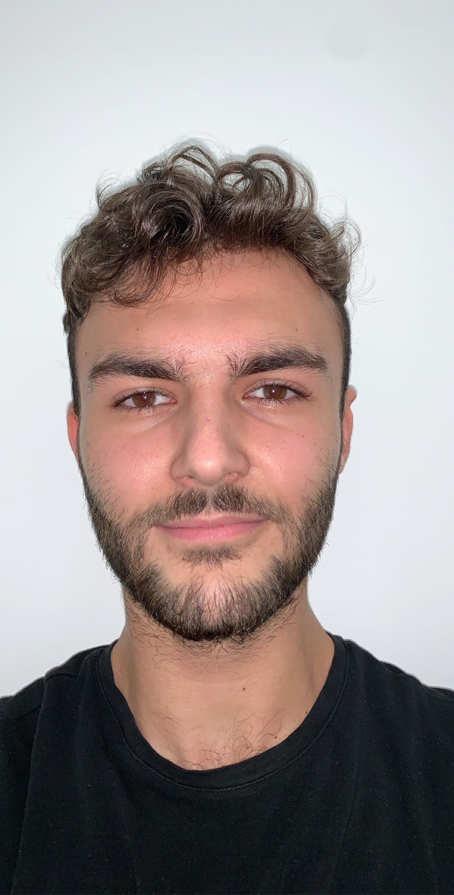

Léo Capdeillayre

20 ans (04/09/2001)
Mobile: 06.81.82.44.95
Email: leo.capdeillayre@gmail.com
Adresse: 73 rue Montaigne
Mes compétences:
Maîtrise partielle du langage informatique python
Maîtrise des logiciels Word, Powerpoint, Excel
Motivé/Esprit d'équipe/Sérieux/Confiant
Expériences Professionnelle:
Stage en entreprise
Theolia Aix-en-provence 2015:
Assistance de direction
Soutien informatique: sécurité infrastructure réseau d'une entreprise
Diplômes et formation:
2019-2020: Pes preparation aux études scientifique
Math/Info/Physique. Fac de science Saint Charles Marseille
2018-2019: baccalauréat scientifique option mathematiques
2015-2016: Brevet des collèges, collège George Brassens Marignane
Langues:
Français
Anglais
Allemand (notions)
Centre d'intérêt:
Musique: 4 ans de batterie
Théâtrethéâtre: 3 ans de cours de
Voyages: Angleterre, Allemagne
Sport: Tir à l'arc, Football Américain, Natation, Sport collectif
Cinéma: Film de genre en version original